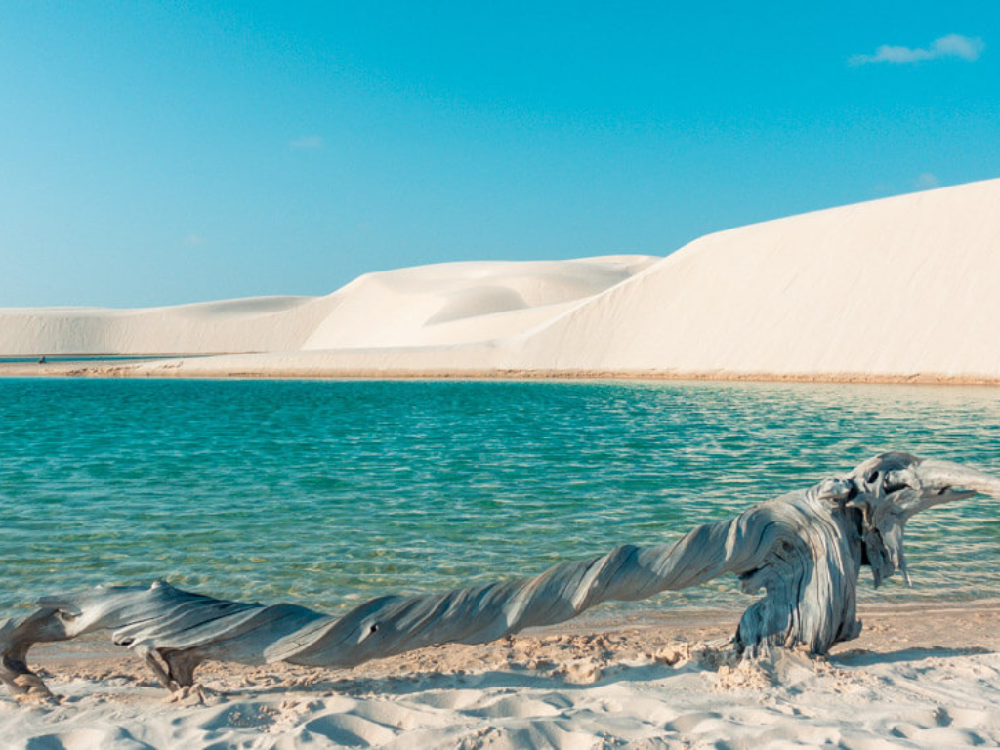

O Maranhão é um estado da região Nordeste do Brasil conhecido por sua grande riqueza cultural, histórica e natural. Sua capital, São Luís, possui um importante centro histórico com construções coloniais e azulejos portugueses, sendo considerada Patrimônio Cultural da Humanidade pela UNESCO. O estado apresenta uma mistura de culturas indígenas, africanas e europeias, refletida em manifestações culturais como o bumba meu boi e o tambor de crioula. O Maranhão também abriga paisagens naturais impressionantes, como os Lençóis Maranhenses, famosos por suas dunas e lagoas cristalinas. A economia maranhense é baseada na agricultura, no comércio, na indústria e no turismo.

Voltar